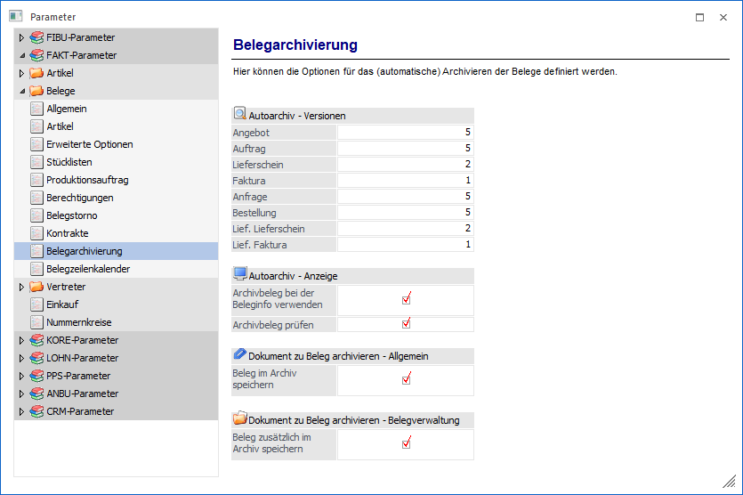
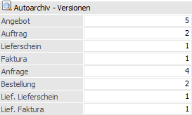
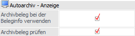
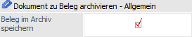
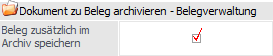

Über den Bereich "FAKT-Parameter - Belege - Belegarchivierung" können u.a. die Einstellungen für das Autoarchiv hinterlegt werden.
Hinweis
Standardmäßig wird das Fenster in einem "Lesemodus" geöffnet, d.h. es können die bestehenden Einstellungen kontrolliert, Änderungen allerdings nicht durchgeführt werden. Hierfür muss zunächst mit Hilfe des Buttons "Bearbeiten" der "Bearbeitungsmodus" aktiviert werden. Alternativ kann diese Aktivierung auch über das Kontextmenü der rechten Maustaste (Funktion "Applikation xxx bearbeiten") erfolgen.

Jeder in WinLine FAKT erfasste Beleg wird automatisch archiviert. Dieses geschieht unabhängig davon, ob sich das Programm "Archiv" mit einer entsprechenden Lizenz im Einsatz befindet.
Autoarchiv - Versionen

Ø Angebot bis Lief. Faktura
An dieser Stelle kann bestimmt werden, wie viele Versionen pro Belegstufe gespeichert werden sollen. Es sind in jeder der 8 möglichen Belegstufen maximal 99 Versionen möglich.
Sobald innerhalb eines Beleges die maximale Anzahl von Versionen erreicht ist, wird bei erneutem Druck des Beleges die älteste Version gelöscht und der aktuelle Druck als aktuellste Version gesetzt.
Autoarchiv - Anzeige

Ø Archivbeleg bei der Beleginfo verwenden
Mit der Option "Bei der Beleginfo verwenden" kann entschieden werden, wie die Anzeige eines Belegs vorgenommen werden soll:
ü Checkbox aktiviert
(Standard)
Es wird die letzte Version des automatisch erstellten
Autoarchivbelegs angezeigt.
Hinweis
Wenn die Beleganzeige mit gleichzeitig gedrückter STRG-Taste erfolgt, kann zwischen den einzelnen Versionen des Belegs gewechselt werden. Hierzu steht in der aufgehenden "Dokumenten-Vorschau" die Buttons "ältere Version / jüngere Version" zur Verfügung.
ü Checkbox deaktiviert
Zur
Beleganzeige werden die Daten aus der Belegerfassungstabelle neu geladen und
gerechnet.
Achtung
In der Zwischenzeit vorgenommene Änderungen, z.B. bei der Rabatt- und Skontosperre in den Artikelgruppen, werden dabei berücksichtigt. Aus diesem Grund können die Beleganzeige und der originale Ausdruck des Belegs voneinander abweichen.
Ø Archivbeleg prüfen
Vor der Anzeige des Autoarchiveintrags wird geprüft, ob die Kontonummer des Belegs, mit jener des Archiveintrags, übereinstimmt. Sollte die Kontonummer z.B. aufgrund von Anpassungen des Druckbilds im Archivbeleg nicht vorkommen oder die Prüfung aus anderen Gründen nicht gewünscht sein, so kann die Kontenprüfung an dieser Stelle deaktiviert werden.
Dokument zu Beleg archivieren - Allgemein

Ø Beleg im Archiv speichern
An dieser Stelle kann definiert werden, ob beim Archivieren eines Dokuments zu einem Beleg (Belegerfassung, Belegmanagement, etc.) auch der Beleg als solches ins Archiv abgelegt werden soll (unabhängig davon, ob die generelle Archivierung aktiviert wurde). Hierdurch ergeben sich diverse Vorteile:
ü Existiert für den Beleg eine zugewiesene Beschlagwortung, so wird diese bei der Archivanalyse an das Archivdokument weitergegeben. Voraussetzung hierfür ist eine deaktivierte Sofortanalyse.
ü Bei der Betrachtung der Archivdokumente eines Belegs wird der Beleg selbst auch angezeigt.
Hinweis
Pro Beleg wird immer nur 1 Archiveintrag erzeugt, d.h. werden mehrere Dokumente zu einem Beleg archiviert, so wird der Beleg nur 1x ins Archiv abgestellt.
Dokument zu Beleg archivieren - Belegverwaltung

Ø Beleg zusätzlich im Archiv speichern
An dieser Stelle kann definiert werden, ob beim Archivieren eines Dokuments zu einem Beleg in der Belegverwaltung (Belegmanagement, Belege und Belege - Matchcode) auch der Beleg als solches ins Archiv abgelegt werden soll.
Hinweis
Sollte die Option "Beleg im Archiv speichern" ebenfalls aktiv sein, so handelt es sich bei dem Archivbeleg um einen unbeschlagworteten Beleg! Ist hingegen nur die Option "Beleg zusätzlich im Archiv speichern" aktiviert worden, so wird ein Beleg abgestellt, welcher mit Hilfe der Archivanalyse beschlagwortet wird.